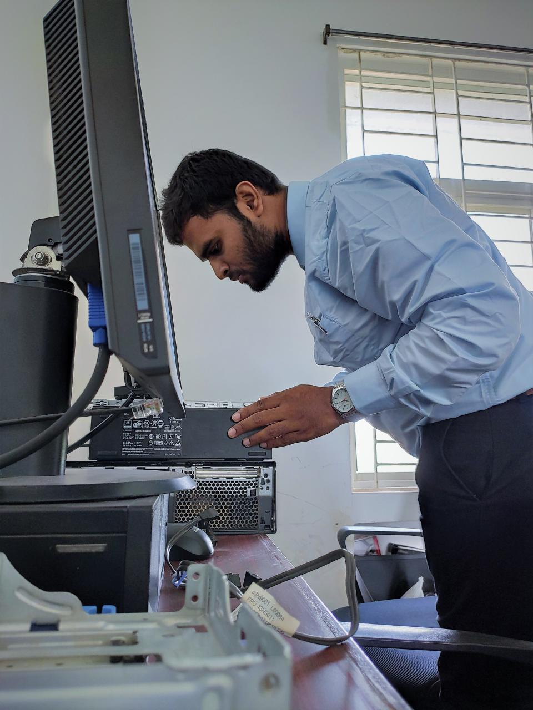
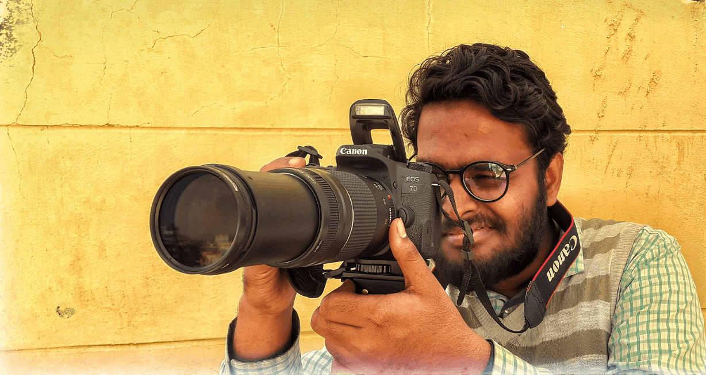
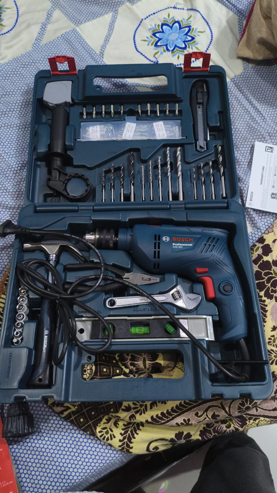
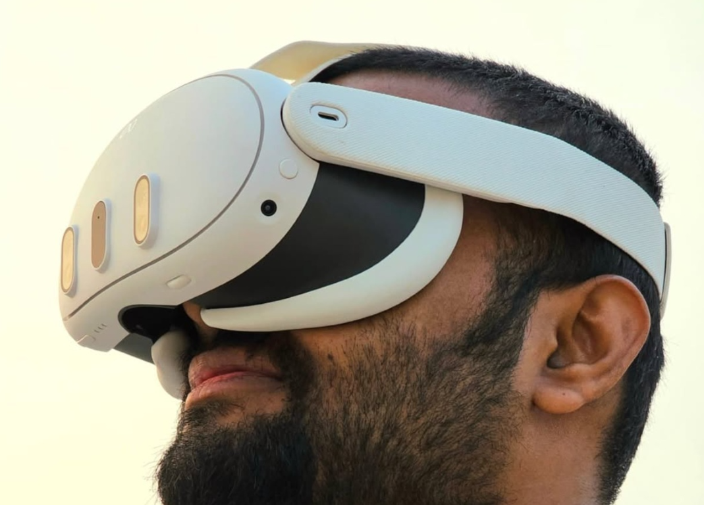
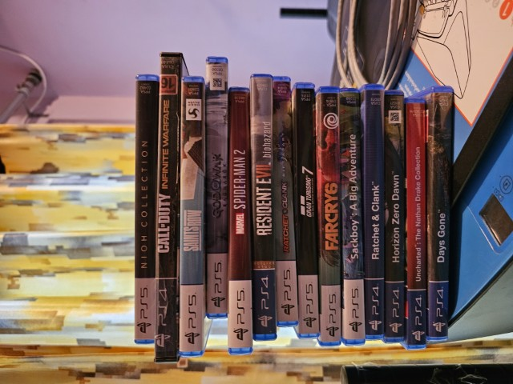
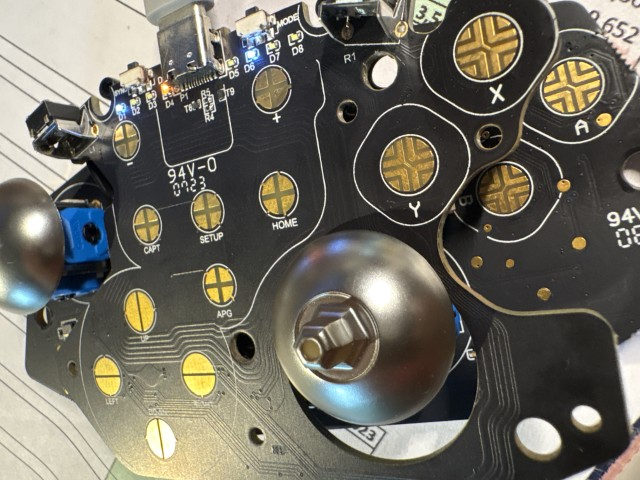
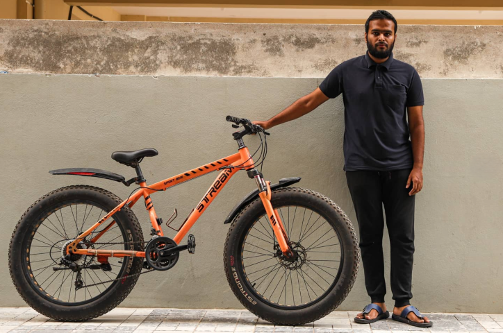
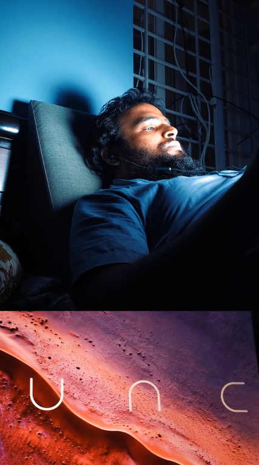

Personal · Interests
Beyond the
day job.
The stuff I do when there’s no deadline. No monetization plan, no end goal—just curiosity doing its thing. Tinkering with whatever’s lying around, fixing what shouldn’t work, and building things purely because I want to see if I can.
.png) Mechanical Keyboards
Mechanical Keyboards
Mechanical Keyboards and Controllers
Really into mechanical keyboards and Controllers, with a small but carefully picked collection featuring Cherry MX Blue, Brown, and Red switches. I’ve spent a fair amount of time figuring out how each one feels and sounds—clicky, tactile, linear, the whole spectrum. It’s been a fun rabbit hole of tiny differences that somehow matter a lot… and after all that, I’ve managed to achieve a very respectable 50+ WPM😂..

PC BuildingPC Building and Self Hosting
Deep into PC building and hands-on hardware work. Managed a school computer lab, handling everything from thermal repasting to system troubleshooting. Outside of work, I constantly tear down and rebuild my own rigs just to push them further. Things changed so fast since I learnt about Tailscale in Home Lab setup.

Photography · Mid 2013Photography
As stated, I’m big on photography—especially macro, product, and high-speed sync (HSS) work with water and dew. I do have tele lens but it isn't exactly well-suited for Wildlife photography. Anyhow feel free to explore my work on Flickr and Unsplash.

Power ToolsPower Tools, 3D Printing & Workshop
A relatively recent obsession. Started with a basic drill from Bosch which my mother got for me, now it's a proper growing toolkit with pipe wrenches and T-Spanners. There's something deeply satisfying about fixing something physical — a nice counterbalance to a day spent entirely on screens. Currently exploring welding, woodworking and fabrication on the side to see how things are run at a local shop here in Hyderabad.
 SBC · Early 2026
SBC · Early 2026
Raspberry Pi & SBCs
Raspberry Pis, Orange Pis, and anything with a 40-pin GPIO header. I was getting too sick of these mobile Operating Systems, sold one of my phones and bought 2 Raspbery Pis just before the price hike. can't believe the amount of help that's on Youtube. Running headless Linux servers, tinkering with GPIO sensors, and using them as nodes in my homelab. The SMB file server article on Medium came directly from this rabbit hole.

Virtual RealityVirtual Reality
Started by Using Google Cardboard on my Galaxy S5, recently bought Meta Quest 3. There is an app in Meta's VR platform whose existence is bugging me a lot, It lets you draw these gigantic murals on big plane walls and I got into this to see what I can do with it. That and of course to play games. Heck so far it didn't let me down.

GamingGaming
Not to flex or anything, but I casually own an Xbox Series S, a PS5, a Nintendo Switch 1 and an NVidia RTX 3080 GPU (bought before the price hike of 2026) —so yeah, gaming is kind of my personality now. My collection is “moderate” in the same way a buffet is “a light snack.” I don’t really mess with Fortnite—I prefer games with thick story, plot, trauma, and at least three existential crisis per playthrough. Also, I play on my mom’s 4K 240Hz OLED TV, because clearly I’ve made excellent life decisions (hahaha 😂). “rangokonk” started as a joke. Now it’s basically my brand. This is my life now.
🎮 Recently Played
"Finally finished the full run by ending all 5 bosses. The game is so good it broke my controllers. I had to replace the potentiometer sticks to hall effect ones to stop drifting because of this game. Didn't touch Algos in the Tower of Sisyphus DLC yet. Housemarque, IMHO is the most underrated Video Game studio on this planet. Can't wait to see what they will do with "S.A.R.O.S"
"Played both of them back to back. The Norse mythology and story telling is simply next level. The music by Bear McCreary and the Mother's sentiment with Atreaus goes so well, some scenes are legit tearjerkers. I think God of War: Ragnarok is the first game I played in 120fps mode in my PS5. The Valkyries, whose design and mannerisms are stunning are incredibly tough to beat. I fought 3 out of 9 valkyries and couldn't stand the sweat my hands were producing by holding the controller."
"The combat mechanics are amazing, the story however kind of get's boring on some levels. I had to watch so many videos on Youtube just to get myself immersed into the world. This is the issue with FPS games, there is this unspoken element of friction to connect to the world and character. For me, atleast. Doom:Eternal (runs at 120fps) however looks good and modern but the 2016 is slightly hard pill to swallow in terms of visual element (stuck at 60fps) especially if you play on a big screen TV or monitor."
 Networking
Networking
Networking & Cable Runs
Got actual routers and switches at home. Not for show — actively used for lab work alongside the CCNA track. I do my own cable runs, hand-crimp RJ45 ends, and configure VLANs and PoE switches. There's something very satisfying about a clean, properly terminated patch panel.
 Repairs
Repairs
Electronics Repairs
Before buying new, I try to fix it. Phones, laptops, peripherals, PSUs, PCBs — if it's broken and has a chance of coming back to life, it ends up on my desk. Component-level diagnosis is a skill that doesn't get enough credit.

SolderingSoldering
Through-hole and basic SMD soldering. Part of both the repair workflow and the SBC/electronics projects. A good iron and steady hands go a long way. Currently using a temperature-controlled station for finer work.

BicyclingBicycling & Badminton
Ever since I was a kid, I used to cycle a lot—like, a lot. Somewhere along the way that heroic lifestyle quietly retired, replaced by… well, less heroic things. But recently, the newly built cycle track at TSPA Junction decided to personally drag me back into motion. Now I walk, listening to music, I cycle, I even play badminton like I’ve got something to prove. And yet—despite all this sudden athletic resurgence—I still weigh over 200 pounds. So clearly, something somewhere is a scam, and I’d like to file a complaint😂.
Movies & TV Shows
Strictly sci-fi. Hard sci-fi preferred, Sometimes Fantasy and Comedy genre preferred. I am just not into
these love stories and crazy stuff that promotes stalking — the kind that respects physics at least a
little. Interstellar, The Expanse, Arrival, Severance. If it has FTL travel and zero explanation, I'm
still watching, but I'm judging. Also a sucker for dystopian future and tech noir. Black Mirror
seasons 1–3 are nearly perfect television. When I was a kid, it started as a small DVD collection ripped by one of my friends from school. Slowly it grew, But I gave it up increasing the DVD collection (the video quality is crap anyway) after owning a Plex Pass in 2016.
OLEDs Man, I am telling you, You gotta watch stuff in OLEDs in dark room, Hopefully temperature-controlled.
🎬 Recently Watched
"Somehow outdid Season 1. The Lumon mythology gets properly expanded and the finale left me genuinely unsettled. Best show on TV right now."
"Villeneuve made the impossible look easy. The sandworm ride scene is one of the greatest things ever put to film. Paul's arc is handled with real care."
"Not going to lie, Didn't read the books but the TV show is brilliantly shot. The Wallfacer arc is brilliantly set up. Some pacing issues mid-season but the payoff is worth it."
"I binge-watched both seasons of Altered Carbon back to back—on an OLED display, so visually, it’s all neon-soaked perfection. Season 1 really delivers: the whole “stack and sleeve” concept feels fresh, and watching Takeshi Kovacs unravel a rich, cyberpunk mystery in a world of immortal elites actually pulls you in. Season 2, though, feels like it’s just going through the motions. Even with Anthony Mackie stepping in, the story loses its edge and ends up feeling stretched and oddly generic. By the end, it kind of feels like a season made just to exist—slowly drifting into the black hole of the Netflix catalog."
"I love these short stories, they look visually stunning and look like video game cutscenes, Hell I think some video game companies are involved in production of this. They are small, respect your time and sometimes just sometimes make you crave for more. "

Sci-Fi · Film